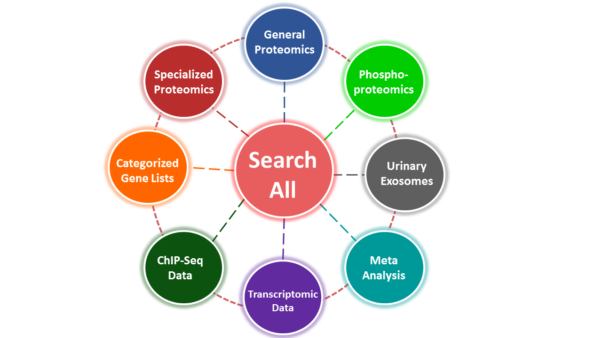

The Kidney Systems Biology website was created by members of the Epithelial Systems Biology Laboratory, NHLBI Intramural Program, directed by Mark Knepper.
Contact us with questions or comments: knep@helix.nih.gov
Database updated: March 6, 2026.